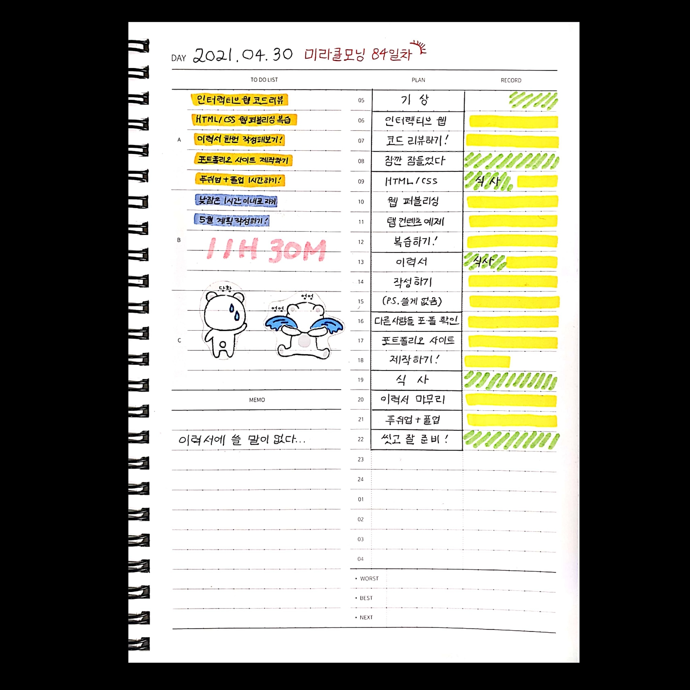
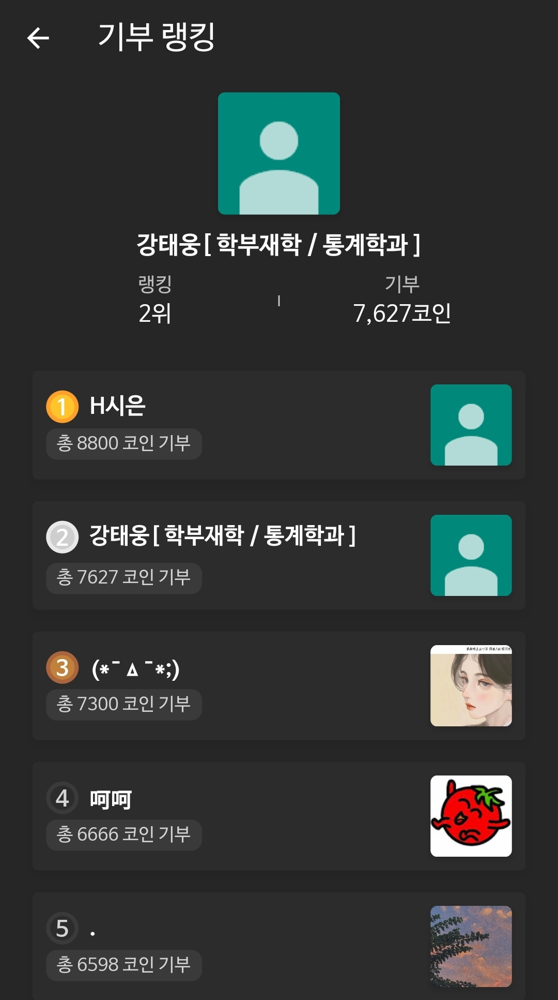
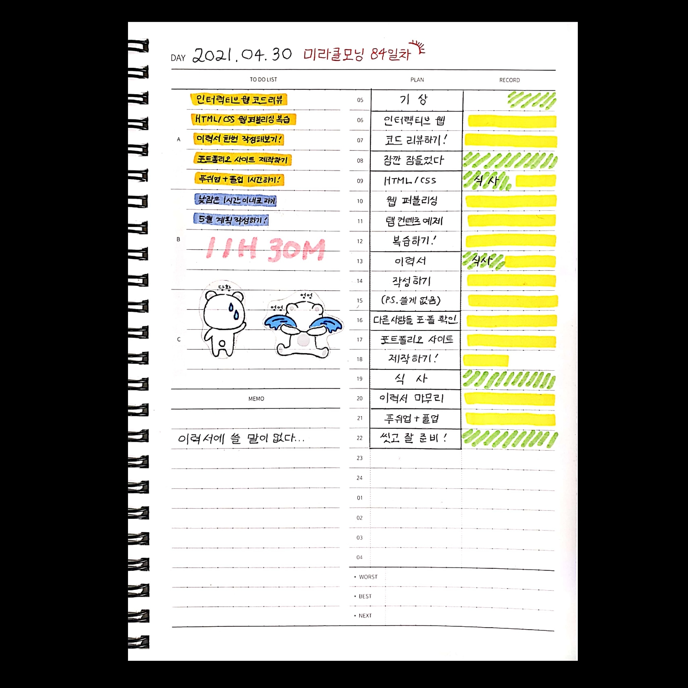
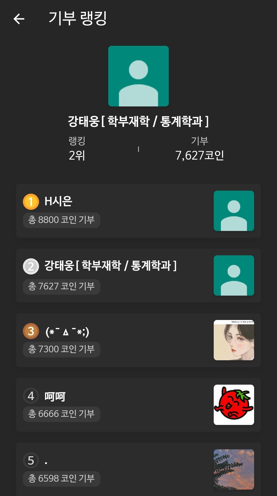

ABOUT
ABOUT ME
"풀스택 개발자를 꿈꾸는 인재"

이름 : 강태웅
- 고양국제고등학교 졸업
- 고려대학교 통계학과 19학번 2학년 수료 (학점 : 3.9/4.5)
- 전 고려대학교 통계학과 학회장
- 현 KUCC 고려대학교 중앙컴퓨터 동아리원
- OCAJP(Java SE 8 Programmer) 자격증 보유
- SQLD(SQL Developer) 자격증 보유
- SAS Base Programming for SAS 9 자격증 보유
"끊임없이 노력하는 인재"
1월부터 8월까지 매일 아침 5시~5시 반에 기상해 코딩 공부를 진행했습니다.
그리고 그때마다 도트타이머와 도트플래너는 항상 저와 함께였습니다.
 



"코딩을 즐기는 인재"
저는 코딩을 하는 것이 너무 즐겁습니다. 어렸을 적부터 여러가지 아이디어를 생각하고 구현해내는 것에 큰 흥미를 느꼈습니다.
웹 프로그래밍은 제가 상상만 해왔던 것들을 웹이라는 하나의 도화지에 그려낼 수 있게끔 해줍니다.
저는 프로그래밍을 공부하면 공부할수록 제 아이디어를 구현할 수 있는 범위가 넓어지는 것이 너무나 재밌고 설렙니다.